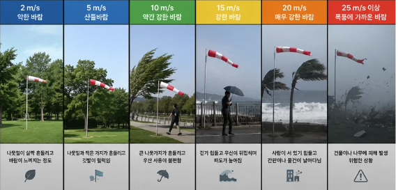

BUSAN COAST SAFETY
1
!
풍속 위험 정보

2
수온 기반 해파리 주의 안내
선택 해수욕장 신고 상태
시연용
신고 시연 보기
내 위치 확인
현재 위치를 저장하지 않습니다.
신고 1건: 제보 확인 중으로 표시
서로 다른 이용자의 신고가 2건 이상: 다중 제보 및 입수 주의로 표시
실제 신고 기능은 Firebase 연결 후에만 반영됩니다.
☀
기상
해파리